Featured Project
PhotoDance
A living, explorable universe built from a 30-year, 225,000-photo family archive — and The Meaning Machine, the enrichment pipeline that turns a grid of numbers into who, where, and why.
Part One
A 30-Year Itch, Finally Scratched
What PhotoDance is — the mosaic, the galaxy, and the lineage of visualization work behind it.

A Photographer and a Tool-Builder
My wife, Lourdes, is the photographer. Over three decades she has assembled 225,000 photographs — a serious, intentional visual record of a life: our child growing up, decades of travel, family gatherings, and quiet moments in between. I am the HCI and visualization researcher. For thirty years at Microsoft Research, my job was to figure out how people make sense of large collections of things. When I retired, I finally had Lourdes’s archive and the open-ended time to build the tool I had always promised.
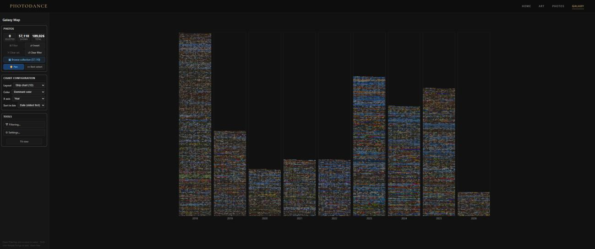
The Galaxy View — 30 Years Rearranged in Real Time
The Galaxy view displays the entire collection as a field of interactive points — at sufficient zoom, actual thumbnails appear. Switching axes reorganizes all 189,000 photos instantly: set the horizontal axis to Year for a massive timeline, switch to Location and points reorganize by geography, or switch to Camera Model to see how Lourdes’s equipment evolved over the decades. Filter to a specific person via face recognition to isolate their entire life story.
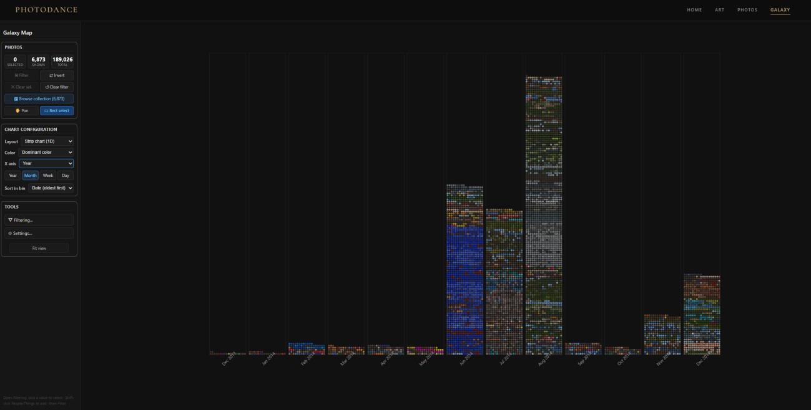
Four Projects That Got Here First
PhotoDance is the culmination of four ancestral projects: MediaFrame (2000s) — demonstrated at CES with Bill Gates and used as the browser for Gordon Bell’s MyLifeBits project; TimeQuilt (2005) — published at SIGCHI, letting users browse archives by diving into representative cluster photos; LiveLabs Pivot (2009) — shipped at Microsoft LiveLabs, generalizing the ideas to any visual collection; and SandDance (2015) — shipped in Power BI and shown on stage with Satya Nadella at the 2017 CEO Summit. PhotoDance combines elements of all of them for a personal photo library.
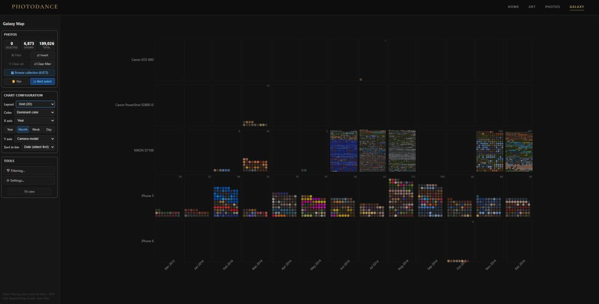
Multiple Layouts, Multiple Answers
The same set of photographs arranged three different ways — by month, by month × camera model, and by geographic map — each answers a fundamentally different question about the collection’s structure. This is the core SandDance insight applied to personal photography: the arrangement is the analysis.
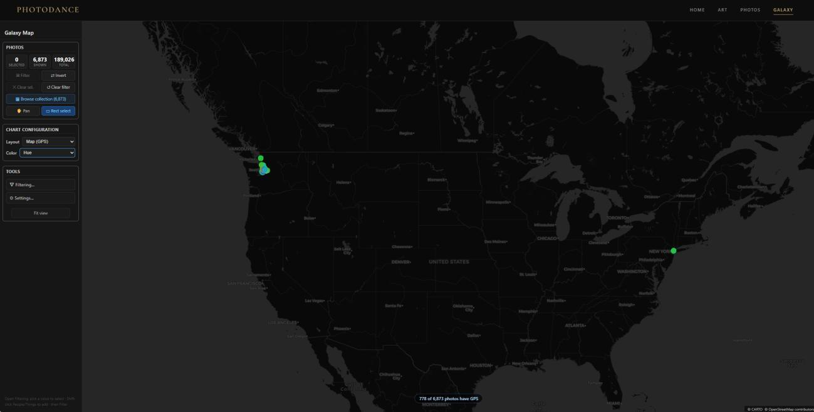
The AI Pipeline: Curating the “Incidental Life”
Before either view can work, the photos need enrichment. A four-stage offline pipeline handles this: (1) Semantic Classification via CLIP — identifies non-memories like lens-cap fires, restaurant menus, and grocery items, either discarding or flagging them for private layers; (2) Quality Scoring — sharpness, brightness, and aesthetic scores for first-pass filtering; (3) Event Clustering — groups shots into distinct events using temporal gaps; (4) Identity Indexing — links faces across the entire 30-year archive. The pipeline also interpolates GPS from iPhone frames to adjacent DSLR frames, and identified 19,725 burst groups to collapse near-identical rapid-fire shots into single representative moments.
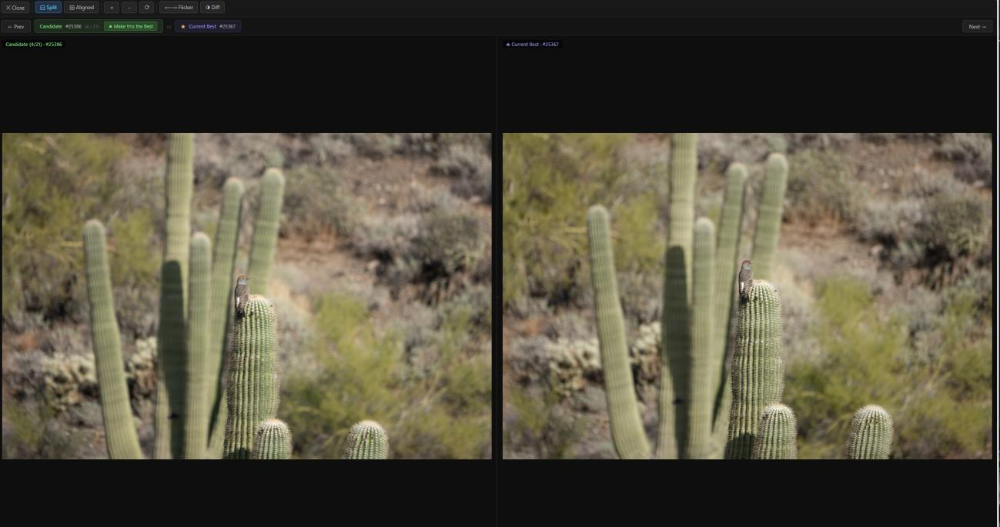
Burst Comparison and the Rendering Challenge
The burst comparison view shows a candidate frame alongside the current representative with synchronized zoom/pan and an optional red-highlight diff overlay that marks differing pixels. On the rendering side, the initial Canvas 2D implementation ran at ~20ms per frame. Moving to WebGL2 dropped that to 11ms — points became GPU primitives drawn in parallel. A sprite atlas loads actual thumbnails into GPU memory at zoom threshold, with an LRU cache managing memory dynamically.
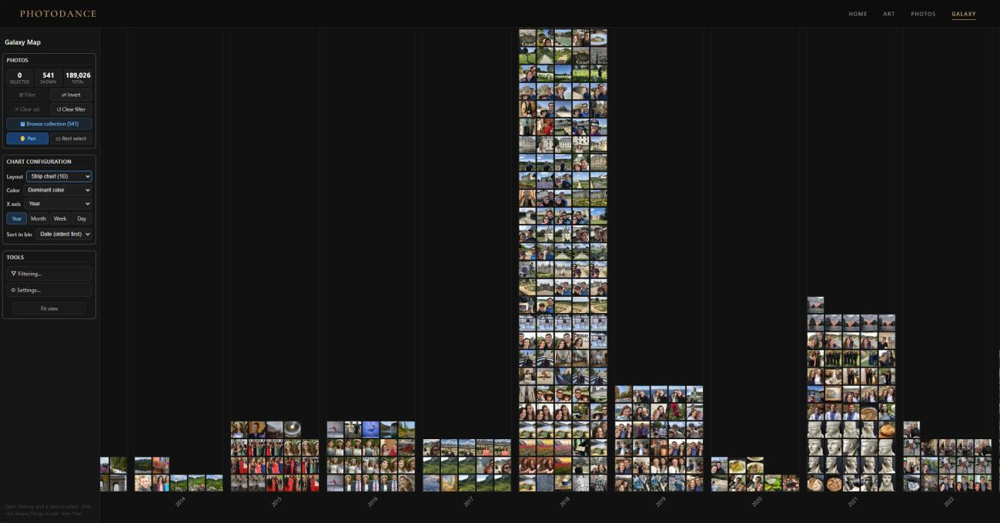
Building This with an AI Collaborator
I used Claude Code throughout the entire development of PhotoDance — not as an autocomplete tool, but as a genuine architectural collaborator. AI completely altered the cost of trying things. Complex tasks I would have deferred indefinitely — a WebGL2 GPU renderer, an LRU-evicting sprite atlas, iPad touch-gesture integration, a perceptual-hashing pipeline — became low-risk, fast-paced experiments. I held the design, UX judgment, and architectural guardrails. Claude held the execution: React state management, WebGL shader authorship, CSS layouts, and SQLite query optimization. The boundary between design and implementation became the interesting thing to negotiate, not a source of friction.
Part Two
The Meaning Machine
How a single photo — to a computer, just a grid of numbers — becomes who is in it, where it was taken, and why it mattered.
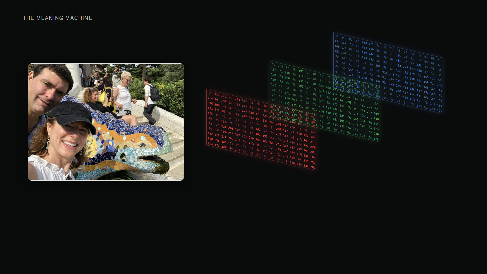
A Photo Is Just a Grid of Numbers
Open any photo on a computer and, underneath, it is nothing but three grids of numbers — a brightness for red, green, and blue at every pixel. Who is in the frame, where it was taken, whether it was worth keeping: none of that is written in those numbers. The overview above showed what the finished tool does — thirty years of family photos turned into a space you can fly through. This is about the harder half: how a pile of pixel grids becomes something you can actually understand and search. The trick is never a single clever model. It is a dozen small steps, each adding one layer of meaning, and a viewer built to use all of them at once.
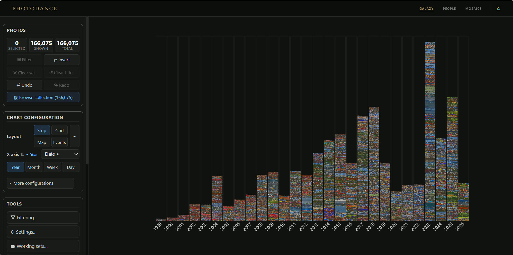
Laid Out by Time and Color
Some structure comes for free. Every file carries an EXIF tag its camera wrote — the moment of capture, the make and model, sometimes GPS — and PhotoDance reads it before running anything expensive. Lay each photo along a timeline by its EXIF date, tint it by the dominant color of its own pixels, and thirty years sort themselves into the view here: every vertical band a slice of time, its color the mood of what happened then. No model has run yet, and yet meaning is already within reach — select a run of years, filter to just those photos, and browse them. The whole reveal comes from the tag alone.
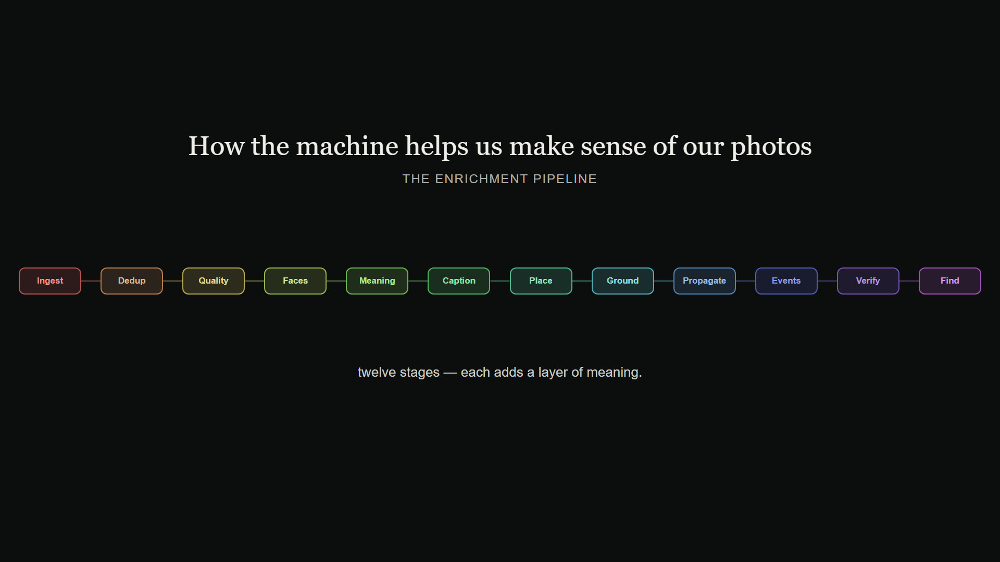
The Whole Pipeline
From there the real work is a sequence. Each photo passes through roughly a dozen stages, and the order matters — every stage leaves behind something the next one leans on. Duplicates go first, so nothing downstream is computed twice; quality scores come before faces, so a sharp frame can stand in for a blurry moment; captions build on the faces and places already found. What follows walks that chain, stage by stage. Each section is named and colored to match the map here.
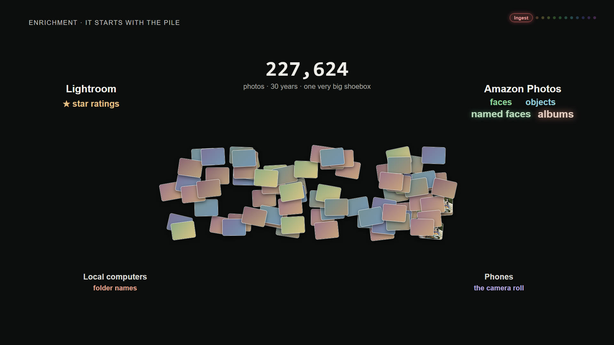
Ingest A Very Big Shoebox
Everything lands in one pile first — more than 227,000 files pulled from Amazon, Google, and Apple Photos and from the higher-end cameras cataloged in Lightroom. Crucially, they arrive already annotated: the cloud services had clustered faces and detected objects, and over the years we had starred favorites, named a handful of people, and built albums by hand. A naive importer would throw all of that away. PhotoDance treats it as evidence instead — a free first guess that every later stage can confirm, correct, or extend.
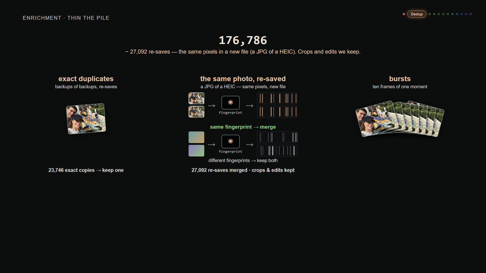
De-duplicate Many of Those Files Are Copies
A shoebox that size is mostly redundancy. Byte-identical copies are the easy case — hash them, keep one. The subtle case is the re-save: a JPEG exported from a HEIC has different bytes but the same picture, so PhotoDance compares perceptual fingerprints rather than raw data, folding the twins together while keeping genuine crops and edits. Rapid-fire bursts collapse to their sharpest frame. What began as a quarter-million files settles to about 160,000 distinct photographs.
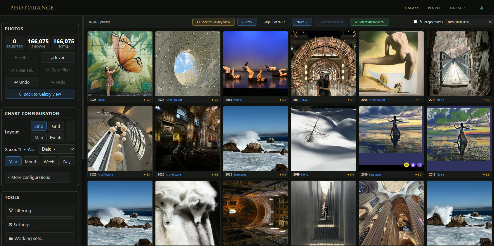
Quality The Models It Computes
Now the models start, and they disagree in useful ways. MUSIQ, NIMA, and MANIQA judge technical quality — focus, exposure, noise — while a LAION aesthetic predictor and ArtiMuse, an aesthetics-tuned vision model, judge taste. PhotoDance blends them, with a full-resolution sharpness measure, into one score that models our own taste, tuned so its ranking matches the stars we have given photos over the years. Sort the library by that score and the taste is unmistakable: out of 160,000 photos, murals, cathedrals, crashing surf, and a lone tree in the snow rise to the top. Nothing is thrown away; the score only decides which frame stands in for a whole moment.
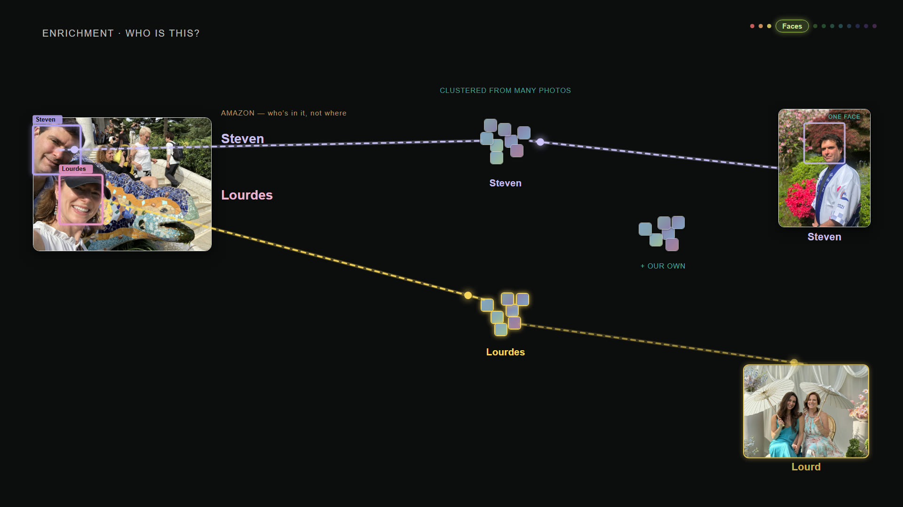
Faces Who’s in the Picture
So much of a life is the people in it. A detector (RetinaFace) finds every face; an ArcFace model turns each one into a 512-number signature, and those signatures cluster into people — the same person recognized across thirty years and a change of haircut. The names we had already confirmed in Amazon Photos seed the guesses; PhotoDance fills in the rest with a deliberately cautious rule. When a photo holds exactly one face and exactly one known name, that pairing must be right, so the name is safe to attach — and from those certain anchors it spreads outward to the crowded group shots. Every propagated name is marked and reversible, so a good guess never hardens into a wrong fact.
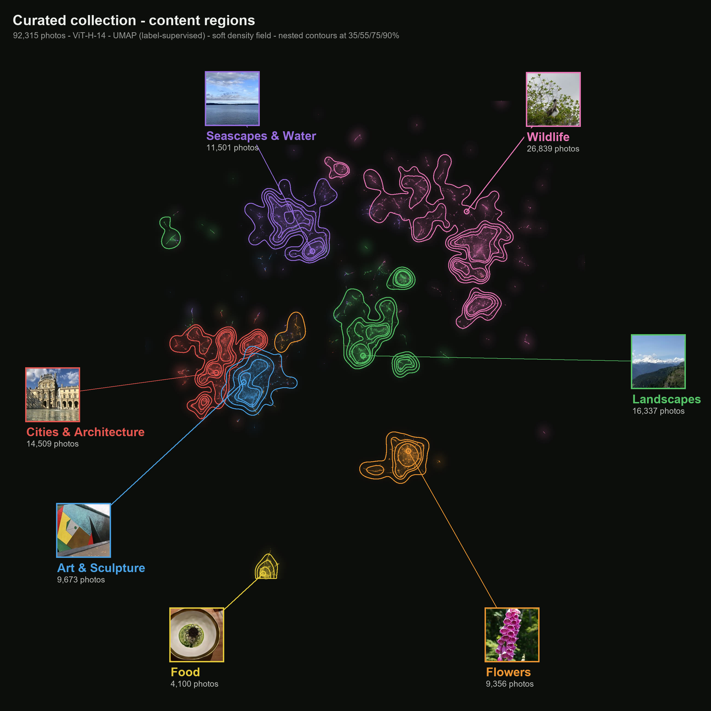
Meaning A Space of Meaning
The richest layer is meaning itself. PhotoDance runs every photo through OpenCLIP — a ViT-H-14 model trained on two billion image-text pairs — which places it as a point in a 1,024-dimension space where nearby means visually and conceptually similar, with nobody having labeled a thing. Flatten that space to a map and its structure is striking: seascapes drift to one shore and landscapes to another, while cities, wildlife, flowers, art, and food each settle into a region of their own — content the model was never told to look for, sorting itself out. And because the same model can embed words into this same space, a typed phrase lands wherever its meaning already lives — which is what turns the map into something you can search.
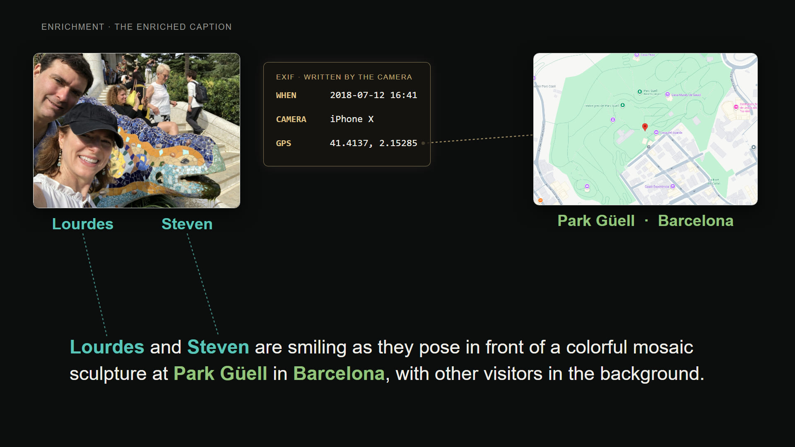
Ground Grounded in Real Places
A caption is only useful if it is true. A vision-language model (InternVL2) writes a first description from the pixels alone — “two people smiling in front of a mosaic.” A second, text-only pass then grounds it, swapping in the names the face stage resolved and the place the location stage found, so the generic line becomes “Lourdes and Steven at Park Güell in Barcelona.” The names come from faces, the place from the EXIF tag, the scene from the caption model — one true sentence that exists only because every earlier stage ran first.
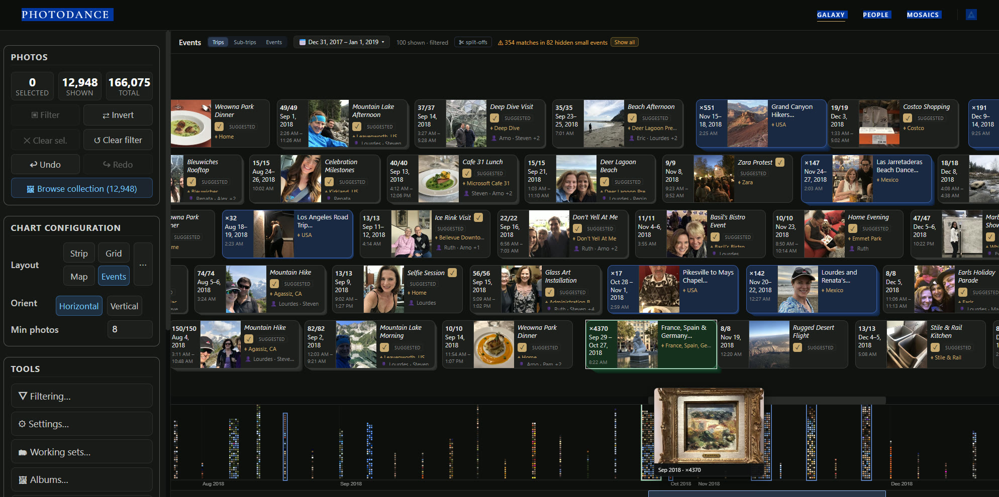
Events Folded Into Events
Photos are not really remembered one at a time; they are remembered as occasions. PhotoDance reads the gaps between timestamps to fold a stream of shots into events, groups nearby events into outings and trips, and gives each a generated name from what is inside it — “Snowy Forest Fun,” a birthday, a road trip. The result is a browsable journal laid over a true-time strip, far closer to how the collection lives in memory than any folder ever was.
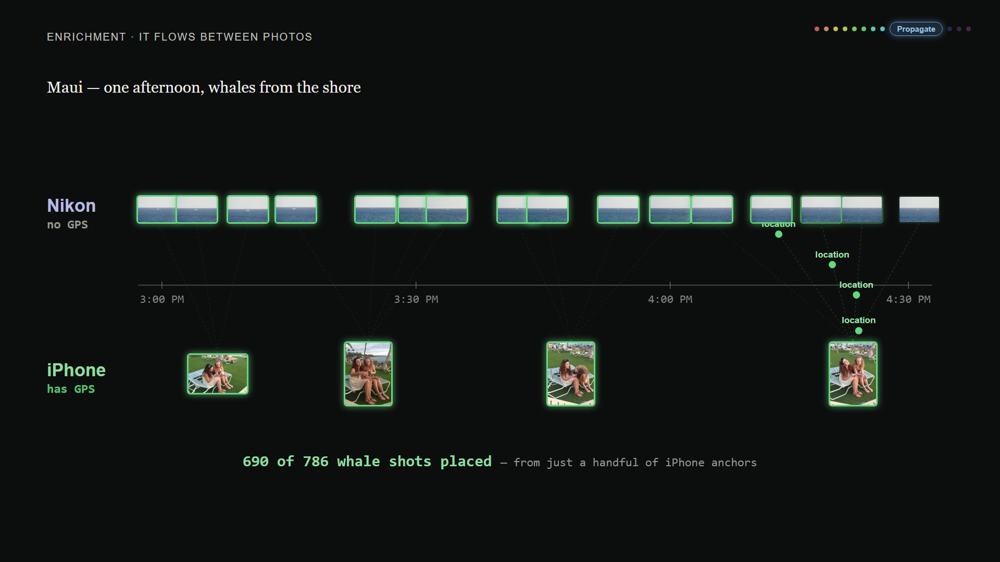
Propagate Borrowed Locations
Grouping does more than tidy the timeline — it lets facts travel between photos. Half the collection never recorded where it was: our early DSLRs, Nikons and Canons, had no GPS; a phone does. But a Nikon frame shot minutes from a located phone photo was almost certainly in the same place, so PhotoDance lets the located photo lend its coordinates to its neighbors in time — never across owners, and always reversibly, keeping the original untouched. On this collection that inference put nearly nine thousand more photos on the map, and the same kind of borrowing carries names and scenes between neighbors too.
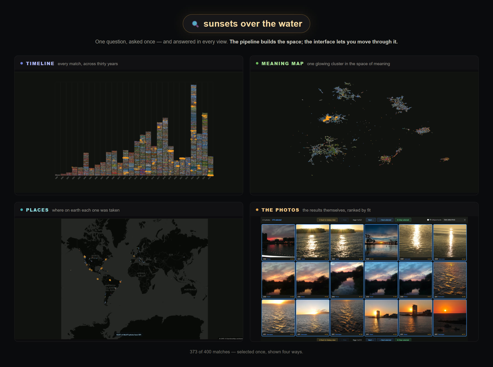
The Machine and the Map
None of these stages is impressive on its own — a quality score, a face cluster, one caption. What makes them add up is that they all write into the same place, and the viewer is built to use them together. Ask one plain question — “sunsets over the water” — and the answer appears in every view at once: lit up across the timeline, gathered into a single glowing cluster on the meaning map, pinned to the coastlines where each was taken, and laid out as the photographs themselves. The same 373 pictures, selected once and seen four ways. That is the point of the whole machine — not to file a lifetime of photos away, but to turn the pile into a space you can understand at a glance and move through by asking. The pipeline builds that space; the interface is how you live in it.
References — models & methods
Every model and method in the pipeline, in order. The composite “our taste” score is a PhotoDance construct fit to our own ratings, not a published model.
De-duplication
- Perceptual hashing (pHash) — Zauner (2010). phash.org
Quality & aesthetics
- MUSIQ — Ke et al. (2021), ICCV. arXiv:2108.05997
- NIMA — Talebi & Milanfar (2018), IEEE TIP. arXiv:1709.05424
- MANIQA — Yang et al. (2022), CVPR Workshops. arXiv:2204.08958
- LAION aesthetic predictor — Schuhmann (2022). github · arXiv:2210.08402
- ArtiMuse — Cao et al. (2025), CVPR 2026. arXiv:2507.14533
Faces
- RetinaFace — Deng et al. (2020), CVPR. arXiv:1905.00641
- ArcFace — Deng et al. (2019), CVPR. arXiv:1801.07698 · InsightFace
Meaning: embeddings & search
- CLIP — Radford et al. (2021), ICML. arXiv:2103.00020
- OpenCLIP (ViT-H-14, LAION-2B) — Ilharco et al. (2021); Cherti et al. (2023), CVPR. github · arXiv:2212.07143
- UMAP — McInnes, Healy & Melville (2018). arXiv:1802.03426
- FAISS — Johnson, Douze & Jégou (2019), IEEE Big Data. arXiv:1702.08734
Captioning
- InternVL2 — Chen et al. (2024), CVPR. arXiv:2312.14238 · models
Grounding & the natural-language agent
- Qwen2.5 (7B / 14B / 32B, via Ollama) — Qwen Team (2024). arXiv:2412.15115
- Claude (Haiku, Sonnet) — Anthropic (2024), Claude 3 Model Card. anthropic.com